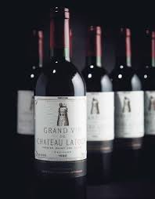
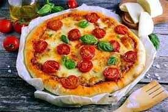
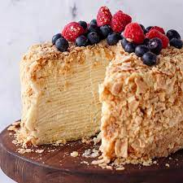

Каре ягненка.Нежное, сочное, ярко-розовое мясо ягнёнка маложирное, практически диетическое и очень полезное.Какое на вкус Каре ягненка? Насыщенный, мясной вкус жирного мяса с ароматом копченостей.

Вино "Chateau Latour" Стилистика вина: красное — мощное, насыщенное, выдержанное в дубе Гастрономия: Прекрасно само по себе и в сочетании с изысканными блюдами из ягненка и пернатой дичи.
Пицца "Маргарита".Это одна из самых популярных пицц в мире,томаты и томатный соус, белая полоса моцареллы и зеленая-базилика.Отличается высокими пышными бортами и тонким пропитанным начинкой основанием.

Торт Наполеон. Лакомство это представляет собой воздушный торт из многих листов тонкого и хрустящего теста, прослоенных кремом - белковым, масляным, заварным, из взбитых сливок, с добавлением какао, сгущенного молока, йогурта, варенья…
